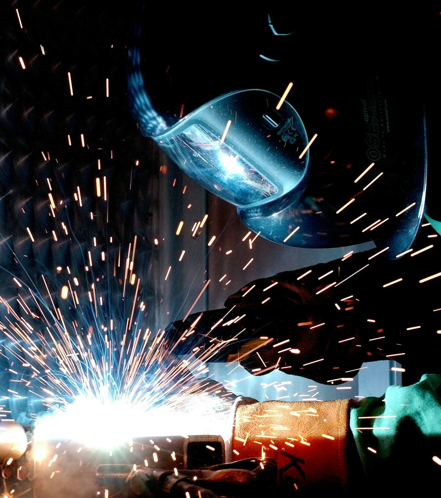

Servicios de Mantenimiento Industrial
Carrusel de servicios industriales
Maquinaria Industrial
Mantenimiento Preventivo
Mantenimiento Correctivo

Soldadura Industrial
Desmontaje de Maquinaria
Cuadros Eléctricos
Automatización
Documentación Técnica
Mantenimiento Especializado
Servicios a Comunidades y Edificios
Carrusel de servicios a comunidades
Fontanería
Electricidad
Pintura y reparación de fachadas
Limpieza
Mantenimiento y reparación de piscinas
⇧